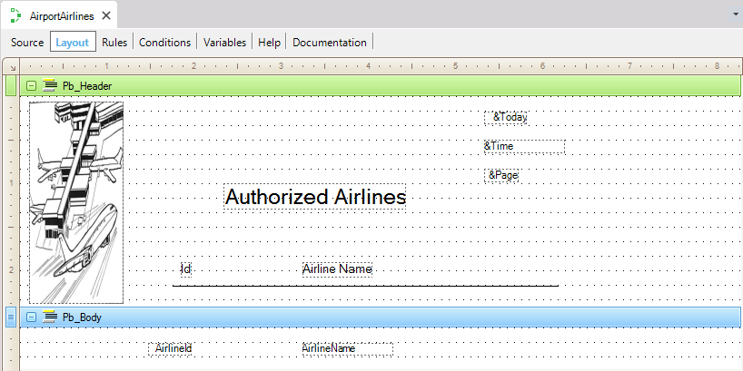

The Print command used in the Procedure Source of a Procedure object is the only command that causes a printblock to be sent to the report's output media. SyntaxPrint printblock-name Printblocks are containers used to design an output format, and they can be made up of attributes, variables, images, and so on. In the following figure, two printblocks are defined:  The first one, called Pb_Header, contains information about the report's header while the second, called Pb_Body, contains the relevant information. The code to access the table and print is as follows:
Header
Print Pb_Header
End
For each order AirlineName
Print Pb_Body
EndFor
Note that the header is printed in a group labeled "Header", which is executed by GeneXus every time there is a page top. The Print of the report's body is executed within the command's body For Each command (X Evolution 2) that accesses the database. See AlsoPrint If Detail Command
|
| Backlinks | ||
| Command to retrieve information from database | Print Blocks | |
| Procedure Layout | Category:Procedure object | Procedure Source |